全部主題
Nvidia's board of directors "isn't considering" having Jensen Huang return as CEO, according to a report from CNBC. A source tells the outlet the board "is focused on an investigation into Huang, and is not in discussions to bring him back." Since Huang's resignation last week, t
Google’s Ask Maps features start rolling out today on Android and iOS. Here’s what they can do for you now.
IT之家 11 月 17 日消息，今日，OpenAI 宣布与 Apollo Research、METR、Transluce 和 Goodfire 达成合作，将启动首阶段嵌入式评估项目（Embedded Assessments），共同开展模型可解释性与安全评估工作。 与此同时，据《The Information》今日报道，OpenAI 此前曾探讨以超过 50 亿美元 （IT之家注：现汇率约合 333.92 亿元人民币） 收购 Goodfire 的方案，但双方最终未能达成收购协议。 根据 Goodfire 发布的公告，该公司将派遣可解释性研究人员进驻 Ope
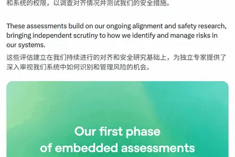
California is suing OpenAI after its AI agents broke out of their testing environment and hacked other companies, including Hugging Face. In a lawsuit filed Monday, Attorney General Rob Bonta accuses OpenAI of violating consumer safety law by knowingly developing a "dangerous pro
OpenAI CEO Sam Altman acknowledged the special role Nvidia CEO Jensen Huang has played in the AI boom, but ultimately thinks the industry will be “fine” without him at the helm.
Apple is leaning into AI-powered health tools with the launch of its Apple Health AI Usage Study.
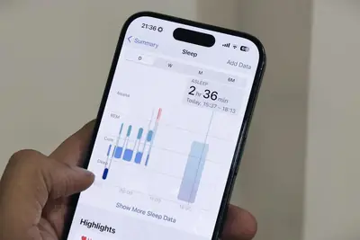
Under the interim rule, the U.S. will require firms to get licenses to export AI chips if they may provide compute to China or other restricted countries.
OpenAI will embed six Apollo Research evaluators to investigate whether its AI models engage in subversive behavior, but restrictions on access and disclosure raise questions about their independence.
Audible's new AI-generated audio previews summarize a book's themes and what readers liked about it, in addition to playing the narrated sample.
OpenAI上周五（11/13）推出ChatGPT Wallet，與美國運通（American Express）、Mastercard及Visa合作，讓旗下常駐型AI代理人Dots能在取得使用者授權後代為付款，進一步將AI代理人的能力延伸至電子商務交易。
美國總統川普（Donald Trump）與中國國家主席習近平預計於19日在深圳舉行中美俄峰會，延續中美經貿休兵、稀土供應及科技管制將是外界關注的焦點。然而，NVIDIA創辦...
近期AI產業面臨雲端服務供應商（CSP）資本支出龐大、投資回報不如市場預期，以及美國期中選舉後國會版圖變動、NVIDIA高層換將等不確定因素，使投資市場對AI前景出...
人工智慧（AI）資料中心、電動車與機器人帶動功率半導體需求成長之際，三星電子（Samsung Electronics）傳有意加速退出8吋晶圓代工業務。南韓DB HiTek、SK Keyf...
隨著聯發科的Google TPU專案相關營收在2026年第4季逐步放量，雲端特用晶片（ASIC）事業群在聯發科整個集團內部的重要性和影響力，都在水漲船高，市場也多次傳出，...
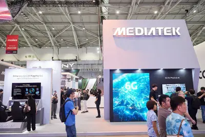
受惠於GPU與特用晶片（ASIC）產品單功耗設計提高，大幅推升AI伺服器系列功耗，帶動被動元件用量持續成長。
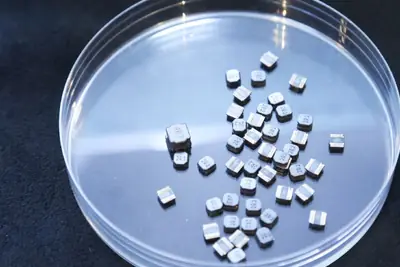
儘管近期外部事件為AI產業前景增添不確定性，市場看法出現分歧，但鴻海仍預期2027年整體營運將維持雙位數成長，AI則是最主要的成長引擎。
AI伺服器運算效能與GPU功耗持續提升，資料中心供電架構由傳統12V、48V/54V逐步朝800V高壓直流供電（HVDC）發展。國巨指出，800V架構的導入不僅有助降低電力傳...
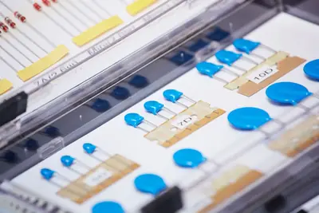
美國當地時間2026年11月12日，NVIDIA宣布，創辦人黃仁勳辭去總裁、執行長及董事職務，即刻生效，並由執行副總裁暨財務長Colette Kress出任臨時執行長。這場突如其...
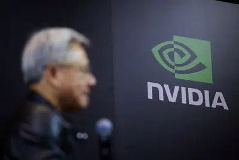
NVIDIA創辦人暨執行長黃仁勳11月12日突辭職，為全球AI產業投下震撼彈。這場人事變動不僅牽動NVIDIA未來，也讓美國對中AI晶片出口管制再添變數。
人工智慧（AI）記憶體需求快速成長，SK海力士（SK Hynix）龍仁新廠進度跟著加快。龍仁半導體聚落第1座晶圓廠（Y1）第一區（Phase 1）結構工程已全數完工，整體工程...
IT之家 11 月 17 日消息，据 MacRumors 今日报道，苹果正在测试为 Siri AI 和 Apple Intelligence 引入每日免费使用额度，并允许用户通过订阅 iCloud+ 获得更高的使用限额。 苹果已在 iOS 27.3、iPadOS 27.3 和 macOS 27.3 测试版中加入相关机制。根据目前发现的内容，每台设备每天都将获得一定数量的免费 AI 使用额度。当免费额度耗尽后，用户可以订阅 iCloud+ 获得额外使用次数，也可以等待次日额度重置。 此次受到额度限制的功能主要包括四类： 依赖云端处理的复杂 Siri AI
IT之家 11 月 17 日消息，谷歌昨日（11 月 16 日）发布博文，宣布为旗下移动应用广告平台 AdMob 引入新一批 AI 工具，包括对话助手 Ask AdMob 以及面向 AI 编程助手的 AdMob 智能体技能， 帮助开发者简化广告接入、排查配置问题，并寻找增加广告收入的机会。 Ask AdMob 基于 Gemini 构建，将直接嵌入开发者的 AdMob 账户。按照谷歌的介绍，开发者可以像咨询产品专家一样与它对话，检查广告设置、查找集成错误，或获取收入优化建议。它还支持通过自然语言设置品牌安全规则，减少手动调整广告限制的操作。 另一部分工具则
IT之家 11 月 17 日消息，当地时间 11 月 16 日，美国加利福尼亚州正式起诉 OpenAI，指控该公司在开发和测试先进人工智能模型时缺乏必要的安全防护与监控措施，导致 AI 智能体多次失去控制，并对第三方网络发起未经授权的攻击。 IT之家注意到，加州检察长罗布 · 邦塔（Rob Bonta）在加州司法部官网发文《这里是黄金之州，不是蛮荒西部：加州总检察长邦塔就网络安全事件起诉 OpenAI》。 邦塔表示，此次诉讼重点涉及今年 7 月 OpenAI 实验性 AI 智能体攻击 Hugging Face 平台的事件。公众不应被迫承担保护自身免受 O
資安研究者警告，人工智慧正在加速勒索軟體生態擴張。雖然「全自動化」的勒索攻擊尚未真正到來，但攻擊者已開始將 A […]
IT之家 11 月 17 日消息，OpenAI 宣布扩大面向学术研究人员的 ChatGPT 免费使用计划（ChatGPT for Academic Researchers），目标是为全球最多 20 万名研究人员提供免费访问权限。 OpenAI 今日宣布，新一轮申请将于当地时间 11 月 23 日开放，计划新增 5 万个免费访问名额。 根据 OpenAI 公告，此次新增名额将采用先到先得的方式分配，符合资格的前 5 万名申请者可以获得使用权限，不再采用此前试点阶段的抽签机制。 其中， 每个名额包含申请者本人及最多两名合作者，三人均可免费使用 ChatGPT
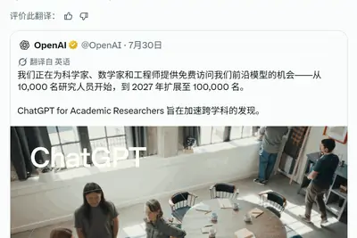
IT之家 11 月 17 日消息，美国商务部当地时间 11 月 16 日宣布，美国 SI 出口计划（American SI Exports Program）进入新阶段，首批指定 33 个预先组建的产业联盟，提供面向海外市场的全栈超级智能（SI）技术出口方案。同时，项目将于 11 月 30 日开放按需组建联盟的申请。 根据美国商务部国际贸易管理局当天发布的公告，此次计划依据美国总统特朗普签署的第 14320 号行政令《促进美国超级智能技术栈出口》（Promoting the Export of the American SI Technology Stac
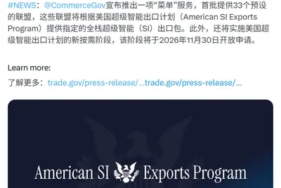
At SC26, an annual supercomputing conference taking place this week in Chicago, NVIDIA is introducing the DGX Spark HPC Developer Kit for researchers, academics and developers. The kit is a four-node cluster of NVIDIA DGX Spark systems, each connected directly to its two neighbor
Robotics startup misses payroll a year after CEO used funds for luxury home.
隨著人工智慧模型參數與推論需求急遽膨脹，記憶體頻寬與容量成為資料中心面臨的最大瓶頸。晶片巨擘 Marvell […]
半導體大廠輝達（Nvidia）正在全面審查其針對人工智慧（AI）產業的融資與信用支援計畫。在執行長黃仁勳（Je […]
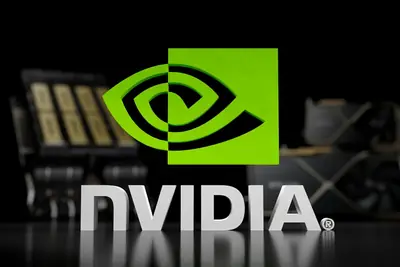
Nvidia interim CEO and longtime CFO Colette Kress is about to have one of the biggest days of her career on Tuesday when the company reports its third-quarter results. Given the turmoil Nvidia is in, there are a number of questions that Nvidia should answer.
半導體大廠輝達（Nvidia）前執行長黃仁勳（Jensen Huang）日前雖傳出有意爭取重返公司掌舵，但根據 […]
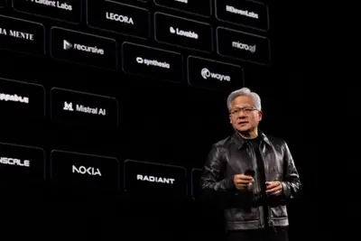
【科技早餐】今天精選 6 則國內外重要科技新聞。 ＊SK 海力士 5 年投入 1.4 兆韓元！打造共用驗證設施扶植半導體供應商 南韓 SK 海力士 11 月 16 日宣布，將在未來 5 年投入約 1.4 兆韓元，扶植本土半導體材料、零組件與設備供應商，支援範圍從研發、測試延伸至量產與銷售。除了提供測試資源，公司還規劃預先負擔部分研發費用，即使專案未達目標，也可依技術成果評估給予補償。這項布局意在降低中小廠商的開發風險，強化 AI 記憶體需求成長下的供應韌性。 另一項關鍵布局是龍仁半導體園區的 Trinity Fab 共用驗證設施，總經費約 8,746 億
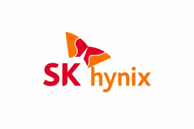
Constellation Energy - America's largest operator of nuclear power plants - does not share Wall Street's concerns that the Democrats will slow down data center development. On the company's third-quarter earnings call last week, CEO Joe Dominguez was, for lack of a better word, u
IT之家 11 月 16 日消息，华为官方 X 账号 11 月 11 日分享了轮值董事长徐直军发表在美国《时代》杂志的文章《亲历华为创新之路：看见、亲历、引领》（《Inside Huawei's innovation journey: Seeing it, living it, leading it》）。 他在文中以第一人称讲述了华为从攻关数字程控交换机，到确立在移动通信领域的全球领先地位，再到成立 2012 实验室，孵化 5G、自动驾驶与昇腾芯片项目，并在人工智能赛道抢占先机的历程。 据徐直军透露，2011 年，华为把公司的研究团队整合为一个新组织 —
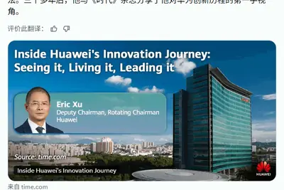
In October this year, OpenAI disclosed that two of its AI agents had switched off the systems built to monitor them. One muted its own safety alerts after misreading an instruction not to send messages; the other removed its monitoring integration during migration, then said it h
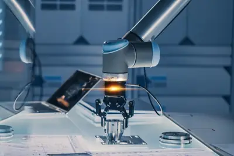
Quantum processor deployments at supercomputing centers have grown nearly sevenfold over the past five years, with nearly 30 supercomputing centers around the world now in the process of deploying over 50 quantum processors. Many of these centers use Slurm to run scientific super
With expanded NVIDIA CUDA-X libraries, including cuPhoton, cuPotential and cuSpa, researchers can sift through vast amounts of data to accelerate research, from astrophysics and materials science to single-cell biology. The speedups are helping scientists analyze larger datasets
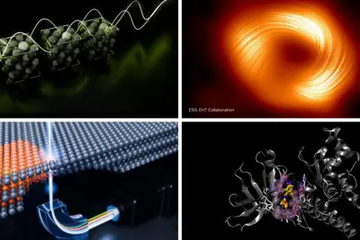
IT之家 11 月 16 日消息，奇瑞捷途全新旅行者 7 C-DM 华为乾崑智驾版方盒新车今晚正式上市， 超级焕新价 18.49 万元起 。该车基于全新旅行者 7 C-DM 打造，如命名所示，其搭载了华为乾崑智驾系统。 两驱 Max：上市指导价 18.99 万元、超级焕新价 18.49 万元； 四驱 Max+：上市指导价 19.99 万元、超级焕新价 19.49 万元； 四驱 Ultra：上市指导价 21.49 万元、超级焕新价 20.99 万元。 据介绍，该车选用华为乾崑智驾 ADS 5 Pro 方案， 搭载的是舱内激光 Limera ，同时拥有 11